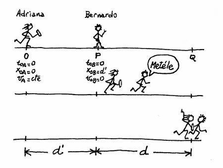

|
NO ME SALEN
APUNTES Y EJERCICIOS RESUELTOS DE FÍSICA DEL CBC
|
|

|
 |
Adicional 4 - En una carrera de relevos, el competidor A
que viene corriendo con velocidad constante vA debe entregar un bastón (testimonio) a su compañero
de equipo, B, en un punto Q establecido
de la pista. B espera en reposo en un punto P, a
una distancia d antes de Q. Sabiendo que la entrega
debe hacerse con ambos competidores a la
par, corriendo a la misma velocidad, y suponiendo
que B se desplaza con aceleración constante
hasta el encuentro, determinar cuál debe ser la
distancia entre ambos en el instante de arranque
de B. |
|
Mi tía Harriet siempre me decía: "cuando no entiendes un enunciado, y lo vuelves a leer y no lo entiendes, y luego lo vuelves a leer y sigues sin entenderlo... entonces es porque se trata del enunciado del problema cuatro de la serie de adicionales de la guía de Física del CBC". ¡Ay, tiíta! Cuánta razón tenías... y yo que no te hacía caso.
Pero tomémoslo con calma y, como hubiese hecho la tía, y pidámosles ayuda a unos "esquemas secuenciales disney". |
|
|
|  |
Adriana viene corriendo a velocidad constante y cuando pasa por O, ahí justo, arranca Bernardo. |
| Mientras Bernardo acelera, Adriana sigue a velocidad constante. Ya está por alcanzarlo. |
| Justo quedan a la par al pasar por Q, y recién ahí Bernardo alcanza la velocidad de Adriana. |
| |
|
|
|
| Ahora sí... ¡¿Pero qué quieren que calcule si en este problema no hay ni un solo dato?! Bueno, ya sé, lo que quieren que averigüemos es d', la distancia entre O y P. Es cierto que con esta falta de datos numéricos no podremos decir cuánto vale d', pero tal vez podamos decir cuánto vale en función de esos otros datos que nombraron, vA y d, y que no nos dijeron cuánto valían. (O sea, les vamos a pagar con la misma moneda). Alterando un poco el orden de siempre, te refuerzo las ideas de lo que ocurre en el ejercicio con unos gráficos. |
|
|
En los gráficos se ve bien el tipo de movimiento de cada uno: MRU para Adriana (rosa, lógicamente) y MRUV para Bernardo (celeste, como todo varoncito); también se ve que Bernardo arranca del reposo; que Adriana alcanza a Bernardo recién en Q; se ve la distancia que los separa cuando arranca Bernardo, d' (nuestra incógnita); y la distancia d que separa los puntos P y Q...
¡Alto! ¡Alto! ¡Ya resolví el problema! ¡Lo saqué, lo saqué! ¡Olé, olé, sachicha con puré! Mirá con atención el segundo gráfico. Recordemos que el área encerrada bajo la curva de un gráfico velocidad-tiempo representa el desplazamiento del móvil. Bien, para Bernardo es el área de un triángulo, y sabemos que su desplazamiento es d, y para Adriana es un rectángulo, y su desplazamiento es d'+ d... Pero el rectángulo es el doble que el triángulo, por lo tanto d' = d. ¡Oso...! |
 |
|
|
|
| Pero vamos a resolverlo por vía de las ecuaciones horarias, para demostrarle a la tía Harriet que ellas lo pueden todo. ¿Cuántas ecuaciones describen todo el problema? Tres, of course, dos para Bernardo, una para Adriana. Las ecuaciones las hallo como siempre: reemplazo las constantes (to, xo, vo y a) de los modelos que siempre tengo a mano... |
|
|
| MRU |
x = xo + v ( t – to ) |
| MRUV |
x = xo + vo ( t – to ) + ½ a ( t – to )² |
| v = vo + a ( t – to ) |
|
|
Los modelos |
| ...por las constantes que representan los movimientos del problema y que ya están consignadas, agrupaditas y ordenaditas en el esquema: para Adriana en el punto 0 y para Bernardo en el punto P. Si somos metódicos y no nos equivocamos, las ecuaciones quedan así: |
|
|
| Adriana |
x = vA . t |
| Bernardo |
x = d' + ½ aB . t² |
| v = aB . t |
|
|
Estas son las ecuaciones que describen TODO el fenómeno del movimiento contado en el enunciado |
| Ahora las usamos (las "especializamos", como dicen los físicos); es decir, les pedimos que hablen del punto Q. Acordate que usar una ecuación horaria es reemplazar las variables. Tené presente que la posición de Q es (d´+ d), y que la velocidad de Bernardo en esa posición es igual a la de Adriana. |
|
|
 |
d' + d = vA . tQ |
[1] |
| d' + d = d' + ½ aB . tQ² |
[2] |
| vA = aB . tQ |
[3] |
|
|
Estas son las ecuaciones que hablan solamente de los puntos que nos interesan, o sea: Q. |
Por último operamos algebraicamente. La idea es obtener una expresión de d' en la que no aparezcan otras constantes que no sean los datos del problema, es decir, vA y d. Seguime, vas a ver que no es difícil.
En la ecuación [1], donde dice vA, reemplazo la [3]
d' + d = aB . tQ² [4]
en la ecuación [2] cancelo d' (fijate que está en los dos miembros), y multiplico toda la expresión por 2.
2 d = aB . tQ² [5]
ahora igualo [4] con [5] (fijate que el segundo miembro es el mismo para ambas).
d' + d = 2 d'
cancelo una de las d' |
|
|
|
|
|
| O sea: si Bernardo está a 20 metros del límite para pasar la posta, tiene que arrancar cuando Adriana esté a 20 metros de él, o sea, a 40 del límite. |
|
|
| DESAFIO: Mejorar la redacción del enunciado para que la tía Harriet no proteste (si resucita, la pobre). |
|
 |
| Prohibida la reproducción total o parcial de este material didáctico de primerísima calidad por cualquier medio visual, gráfico, sonoro o tridimensional de mala calidad. Las transgresiones a esta disposición serán penalizadas con 25 años de reclusión en la Antártida y trabajos forzosos.
Sólo se permite su reproducción citando la fuente. Algunos derechos reservados. Última actualización ago-06. Buenos Aires, Argentina. |
|
|
|